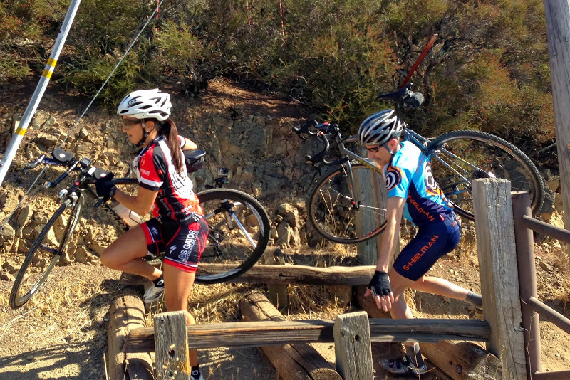

|
 |
 |
|
|
|
|  |
| Crossing the barriers (Cara Coburn) |
It was a gorgeous day on Montevina with perfect climbing conditions for the Team Brown Zone presentation of a new climb for Low-Key: Montevina + dirt.
We did Montevina in 2009 but stopped at the gate marking the end of the pavement. This year we went further, with riders struggling to recover from the anaerobic effort of the final brutal slopes of Montevina road to dismount the bike, step over the logs at the edge of the gate, remount (nontrivial on the dirt slope), and ride the extra half-mile to the top. Along the way there was one sandy left-hand-turn before the final run to the top. But riders handled the dirt fine.
The same wasn't always true of the steeps marking the end of the paved road. Several riders struggled to find they had run out of gears, and with legs drained from the sustained 9% slope leading to the finish, ran out of momentum and toppled over. But better to go down fighting then to unclip even a second sooner. These riders are true heros of Low-Key: death before dismount!
With a somewhat reduced turnout this week versus last week, it was clear some potential riders were deterred by the dirt. This was unfortunate, as dirt roads are very much an integral component of road cycling's history. Indeed throughout much of the last century, many of the great passes of the Tour de France and Giro d'Italia were unpaved. Fausto Coppi would have been reveling in today's course.
Top results today: In the hybrid-electric, Bill Bushnell on his hybrid-electric put in a blistering climb to reach the gate in 13-and-change, then flew over the barriers to record the best split of the day on the dirt section, which included the gate crossing. Unlike last week, Bill didn't have any competition this time in the hybrid-electrics. Hopefully we get more in future weeks.
In the women, McLovely Brown rebounded from the cold which sidelined her at Montebello to crush the Strava KOM and take the first place in the women's rankings for week 2. She additionally passed week 1 leader Jane Despas to take the overall lead. Helen Casabona and Lisa Penzel were second and third, Lisa showing considerable improvement from the effects of the oral surgery which caused her to not finish last week.
In the men, it was Stefano Profumo with an impressive finish ahead of Rich "McLovin'" Brown, who also coordinated the climb. Ciaran Bryne finsihed an excellent third. Stefano's result pushed him to 3rd in the overall ranking, but with two scores versus one going into week 3, is in a strong position to take top position after Bohlman.
In the tandem division, Marco and Ruth Palmeri powered through the steep portion of the climb, then elegantly remounted their bike after coasting over the barriers, to take a dominant division win. Indeed, they were the only tandem to brave the challenging course.
In the team competition, it was Brown Zone all the way, followed by a close 2nd and 3rd for Srs & Mrs and Bike Trip/Symantec.
Special thanks to Team Brown Zone and all the fantastic volunteers this week for what was a super-successful climb!
Special note to unofficial rider John Callahan, who climb in 37:26, with 31:52 to the gate and 5:33 from the gate to the top. Also special thanks to Thomas Preisler, who helped the Low-Key effort by riding "sweeper" on the climb.
KOM special mention qualifiers indicated with orange background. Discarded scores are crossed out. Volunteer weeks are indicated with V. Ride credit weeks are indicated with RC. V and RC weeks are equivalent for scoring.
| pl | # | name | team | cat | time | mph | fph | score |
|---|---|---|---|---|---|---|---|---|
| 1 | 33 | McLovely Brown | The Brown Zone | Mother Of Two | 30:38 | 7.56 | 3690 | 123.94 |
| 2 | 41 | Helen Casabona | Pen Velo/Pomodoro | 50+ | 31:48 | 7.28 | 3555 | 119.42 |
| 3 | 126 | Lisa Penzel | The Brown Zone | 45+ | 32:21 | 7.16 | 3494 | 117.40 |
| 4 | 209 | Janet Gardner | Sr's & Mr's of No Mercy | 45+ | 33:00 | 7.02 | 3425 | 115.11 |
| 5 | 147 | Marty Scott | LGBRC | 55+ | 33:29 | 6.92 | 3376 | 113.46 |
| 6 | 223 | Eva Silverstein | Western Wheelers | 40+ | 36:11 | 6.40 | 3124 | 105.04 |
| 7 | 34 | Roxy Brown | The Brown Zone | 40+ | 37:56 | 6.11 | 2980 | 100.23 |
| 8 | 67 | Lisa Emmerich | Sr's & Mr's of No Mercy | 50+ | 38:36 | 6.00 | 2928 | 98.51 |
| 9 | 202 | Kathy Camp | LGBRC | 25+ | 40:18 | 5.75 | 2805 | 94.38 |
| 10 | 210 | Otis Gilchrist | 20+ | 43:12 | 5.36 | 2617 | 88.09 | |
| 11 | 59 | Nat Criou | self | 35+ | 43:59 | 5.27 | 2570 | 86.53 |
| 12 | 217 | Magdalena Novotna | El Camino YMCA | 45+ | 44:30 | 5.20 | 2540 | 85.53 |
| 13 | 44 | Beverly Chaney | Mama Hips | 45+ | 46:54 | 4.94 | 2410 | 81.18 |
| 14 | 155 | Darlene Stevenson | Muddy | 40+ | 49:56 | 4.64 | 2264 | 76.28 |
reference time for division Women = 38:01
| pl | # | name | team | cat | time | mph | fph | score |
|---|---|---|---|---|---|---|---|---|
| 1 | 132 | Stefano Profumo | Bike Trip/Symantec | 35+ | 25:11 | 9.20 | 4489 | 124.97 |
| 2 | 14 | Rich McLovin Brown | The Brown Zone | 35+ | 25:57 | 8.92 | 4356 | 121.30 |
| 3 | 38 | Ciaran Byrne | Sr's & Mr's of No Mercy | 40+ | 26:26 | 8.76 | 4276 | 119.10 |
| 4 | 108 | Todd Markelz | 35+ | 26:35 | 8.71 | 4252 | 118.43 | |
| 5 | 158 | Nils Tikkanen | Bike Trip/Symantec | Honey Badger | 26:54 | 8.61 | 4202 | 117.05 |
| 6 | 207 | Robert Easley | Sr's & Mr's of No Mercy | 45+ | 27:22 | 8.46 | 4131 | 115.07 |
| 7 | 214 | Alexander Komlik | San Jose Bike Club | 45+ | 27:54 | 8.30 | 4052 | 112.88 |
| 8 | 156 | Todd Studenicka | San Jose Bike Club | 45+ | 28:24 | 8.15 | 3980 | 110.91 |
| 9 | 31 | Blue Brown | The Brown Zone | 35+ | 28:28 | 8.14 | 3971 | 110.65 |
| 10 | 112 | Miro Miklos | 30+ | 28:39 | 8.08 | 3946 | 109.95 | |
| 11 | 220 | Ryan Powell | Team Joe Karbowski | 29:21 | 7.89 | 3851 | 107.34 | |
| 12 | 58 | Andy Crews | Diablo | 40+ | 29:25 | 7.87 | 3843 | 107.10 |
| 13 | 95 | Mark King | Equipe Flamme Rouge | 45+ | 29:30 | 7.85 | 3832 | 106.80 |
| 14 | 79 | Bill Harkola | Pen Velo/Pomodoro | 55+ | 29:32 | 7.84 | 3828 | 106.68 |
| 15 | 164 | Matt Wocasek | Bike Trip/Symantec | 45+ | 29:32 | 7.84 | 3828 | 106.68 |
| 16 | 144 | Eddie Santos | Bike Trip/Symantec | 25+ | 29:54 | 7.75 | 3781 | 105.38 |
| 17 | 201 | Dino Brown | The Brown Zone | 50+ | 30:20 | 7.64 | 3727 | 103.88 |
| 18 | 124 | Kitchen Patrol | The Brown Zone | 30:33 | 7.58 | 3700 | 103.15 | |
| 19 | 23 | Daniel Aminzade | 30+ | 31:21 | 7.39 | 3606 | 100.54 | |
| 20 | 62 | Mike Davis | LGBRC | 45+ | 31:26 | 7.37 | 3596 | 100.27 |
| 21 | 140 | Dave Rossow | Western Wheelers | 40+ | 31:34 | 7.34 | 3581 | 99.85 |
| 22 | 208 | Brad Fox | LGBRC | 30+ | 31:50 | 7.28 | 3551 | 99.02 |
| 23 | 85 | Tim Irvine | LGBRC | 40+ | 32:03 | 7.23 | 3527 | 98.36 |
| 24 | 146 | Drew Schleck | 20+ | 32:11 | 7.20 | 3512 | 97.95 | |
| 25 | 212 | Peter Ingram | Steely Man | 55+ | 32:11 | 7.20 | 3512 | 97.95 |
| 26 | 163 | Jeremy Wiley | Sycip | 40+ | 32:30 | 7.13 | 3478 | 97.00 |
| 27 | 36 | Nic Brummell | Atlas | 50+ | 32:37 | 7.10 | 3466 | 96.66 |
| 28 | 206 | Marek DUTKIEWICZ | Silicon Valley Triathlon | 50+ | 32:45 | 7.07 | 3452 | 96.27 |
| 29 | 65 | Giles Douglas | 40 TODAY | 33:02 | 7.01 | 3422 | 95.45 | |
| 30 | 116 | Ilya Moskovko | Bar Utd | 25+ | 33:13 | 6.97 | 3403 | 94.92 |
| 31 | 55 | Steve Connelly | 55+ | 33:23 | 6.94 | 3386 | 94.45 | |
| 32 | 226 | StephensWilcox | 45+ | 33:50 | 6.85 | 3341 | 93.21 | |
| 33 | 12 | Will von Kaenel | LGBRC | 55+ | 33:53 | 6.84 | 3336 | 93.07 |
| 34 | 37 | Scott Byer | 45+ | 33:56 | 6.83 | 3331 | 92.93 | |
| 35 | 25 | Sam Beal | Volagi | 60+ | 34:09 | 6.78 | 3310 | 92.35 |
| 36 | 213 | Larry Klein | GOM | 50+ | 34:11 | 6.78 | 3307 | 92.26 |
| 37 | 221 | Dirk Rohloff | Plus 3 | 55+ | 34:26 | 6.73 | 3283 | 91.59 |
| 38 | 230 | Kris McQueen | 35+ | 34:45 | 6.66 | 3253 | 90.76 | |
| 39 | 94 | Franz Kelsch | Nightriders | 65+ | 34:57 | 6.63 | 3234 | 90.25 |
| 40 | 222 | Omer Shapira | Quadzilla Racing | 35+ | 35:21 | 6.55 | 3198 | 89.23 |
| 41 | 72 | Danny Froeming | Sr's & Mr's of No Mercy | 45+ | 35:26 | 6.54 | 3190 | 89.02 |
| 42 | 205 | Frank Drobot | Team Diament | 60+ | 35:53 | 6.45 | 3150 | 87.91 |
| 43 | 130 | Mark Powers | Pen Velo/Pomodoro | 55+ | 36:19 | 6.38 | 3113 | 86.87 |
| 44 | 203 | Kevin Colagiovanni | Team Dud | 30+ | 37:40 | 6.15 | 3001 | 83.78 |
| 45 | 225 | Yang Tang | 30+ | 38:09 | 6.07 | 2963 | 82.73 | |
| 46 | 125 | Frank Paysen | autonomous masochist | 50+ | 39:01 | 5.94 | 2897 | 80.90 |
| 47 | 24 | Christopher Barrett | San Jose Bike Club | 50+ | 39:07 | 5.92 | 2890 | 80.69 |
| 48 | 100 | Eric Lawrence | Team Djament | 30+ | 39:23 | 5.88 | 2870 | 80.15 |
| 49 | 56 | Richard Contreras | Rhus | 39:41 | 5.84 | 2849 | 79.55 | |
| 50 | 70 | Klaus Fleischmann | 45+ | 39:47 | 5.82 | 2841 | 79.35 | |
| 51 | 143 | Koushik Sampath | LGBRC | 25+ | 42:10 | 5.49 | 2681 | 74.90 |
| 52 | 211 | James Han | LGBRC | 42:55 | 5.40 | 2634 | 73.59 | |
| 53 | 133 | Alec Proudfoot | DaSH | 50+ | 43:10 | 5.37 | 2619 | 73.17 |
| 54 | 215 | Garrett Lau | LGBRC | 45+ | 43:36 | 5.31 | 2593 | 72.45 |
| 55 | 53 | Tracy Colwell | Team Colwell | 45+ | 45:32 | 5.09 | 2483 | 69.39B |
| 56 | 52 | Skyler Colwell | Team Colwell | Junior | 45:40 | 5.07 | 2475 | 69.19 |
reference time for division Men = 31:31
| pl | # | name | team | cat | time | mph | fph | score |
|---|---|---|---|---|---|---|---|---|
| 1 | 218 | Marco Palmeri | 30+ | 50:46 | 4.56 | 2227 | 68.66 | |
| 219 | Ruth Palmeri | 30+ |
| pl | # | name | team | cat | time | mph | fph | score |
|---|---|---|---|---|---|---|---|---|
| 1 | 6 | Bill Bushnell | Low-Key | Hors | 16:17 | 14.22 | 6942 | 112.39 |
reference time for division Hybrid Electric = 18:18
| pl | team | score | riders |
|---|---|---|---|
| 1 | The Brown Zone | 362.65 | Rich McLovin Brown, Blue Brown, Dino Brown, Kitchen Patrol, McLovely Brown, Lisa Penzel, Roxy Brown |
| 2 | Sr's & Mr's of No Mercy | 349.27 | Ciaran Byrne, Robert Easley, Janet Gardner, Danny Froeming, Lisa Emmerich |
| 3 | Bike Trip/Symantec | 348.70 | Stefano Profumo, Nils Tikkanen, Matt Wocasek, Eddie Santos |
| 4 | 316.92 | Todd Markelz, Daniel Aminzade, Drew Schleck, Giles Douglas, Scott Byer, Kris McQueen | |
| 5 | Pen Velo/Pomodoro | 312.97 | Bill Harkola, Helen Casabona, Mark Powers |
| 6 | LGBRC | 312.75 | Mike Davis, Brad Fox, Tim Irvine, Marty Scott, Will von Kaenel, Kathy Camp, Koushik Sampath, James Han, Garrett Lau |
| 7 | San Jose Bike Club | 304.48 | Alexander Komlik, Todd Studenicka, Christopher Barrett |
| 8 | Western Wheelers | 204.90 | Dave Rossow, Eva Silverstein |
| 9 | Team Colwell | 138.58 | Tracy Colwell, Skyler Colwell |
| 10 | Low-Key | 112.39 | Bill Bushnell |
| 11 | Team Joe Karbowski | 107.34 | Ryan Powell |
| 12 | Diablo | 107.10 | Andy Crews |
| 13 | Equipe Flamme Rouge | 106.80 | Mark King |
| 14 | Steely Man | 97.95 | Peter Ingram |
| 15 | Sycip | 97.00 | Jeremy Wiley |
| 16 | Atlas | 96.66 | Nic Brummell |
| 17 | Silicon Valley Triathlon | 96.27 | Marek DUTKIEWICZ |
| 18 | Bar Utd | 94.92 | Ilya Moskovko |
| 19 | Volagi | 92.35 | Sam Beal |
| 20 | GOM | 92.26 | Larry Klein |
| 21 | Plus 3 | 91.59 | Dirk Rohloff |
| 22 | Nightriders | 90.25 | Franz Kelsch |
| 23 | Quadzilla Racing | 89.23 | Omer Shapira |
| 24 | Team Diament | 87.91 | Frank Drobot |
| 25 | self | 86.53 | Nat Criou |
| 26 | El Camino YMCA | 85.53 | Magdalena Novotna |
| 27 | Team Dud | 83.78 | Kevin Colagiovanni |
| 28 | Mama Hips | 81.18 | Beverly Chaney |
| 29 | autonomous masochist | 80.90 | Frank Paysen |
| 30 | Team Djament | 80.15 | Eric Lawrence |
| 31 | Rhus | 79.55 | Richard Contreras |
| 32 | Muddy | 76.28 | Darlene Stevenson |
| 33 | DaSH | 73.17 | Alec Proudfoot |